Codex 实战案例库
按参考站的阅读节奏重做：案例总览、16 个主案例、配图入口、怎么选择、成熟度和扩展案例。正文保持原创，并继续保留你的国内站和中转入口。
主案例总览
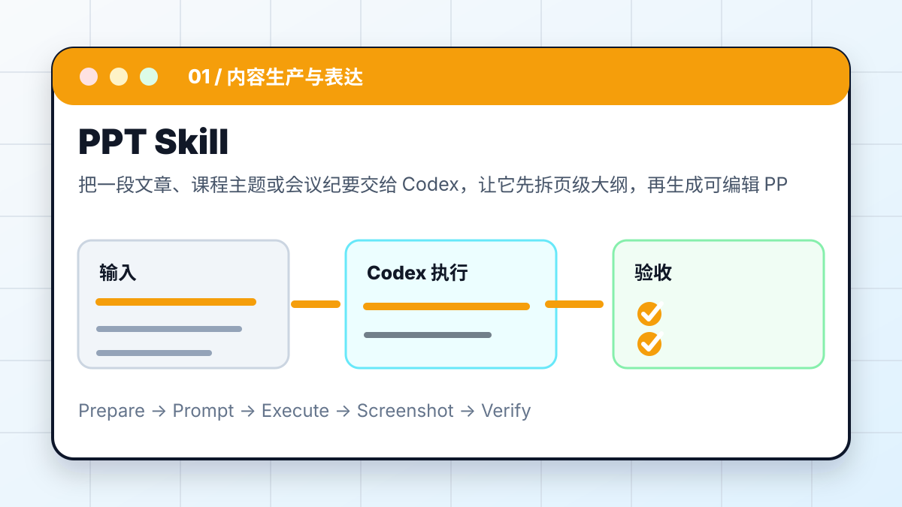
PPT Skill
把一段文章、课程主题或会议纪要交给 Codex，让它先拆页级大纲，再生成可编辑 PPTX，并做版式检查。
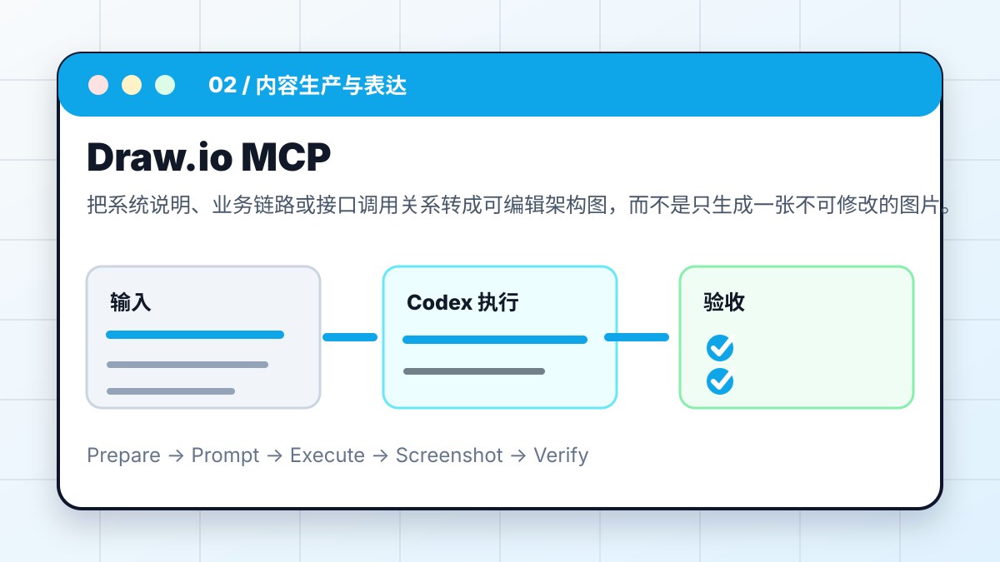
Draw.io MCP
把系统说明、业务链路或接口调用关系转成可编辑架构图，而不是只生成一张不可修改的图片。

Playwright MCP
让 Codex 真正打开页面、点击入口、保存截图，并基于页面状态而不是想象来判断结果。
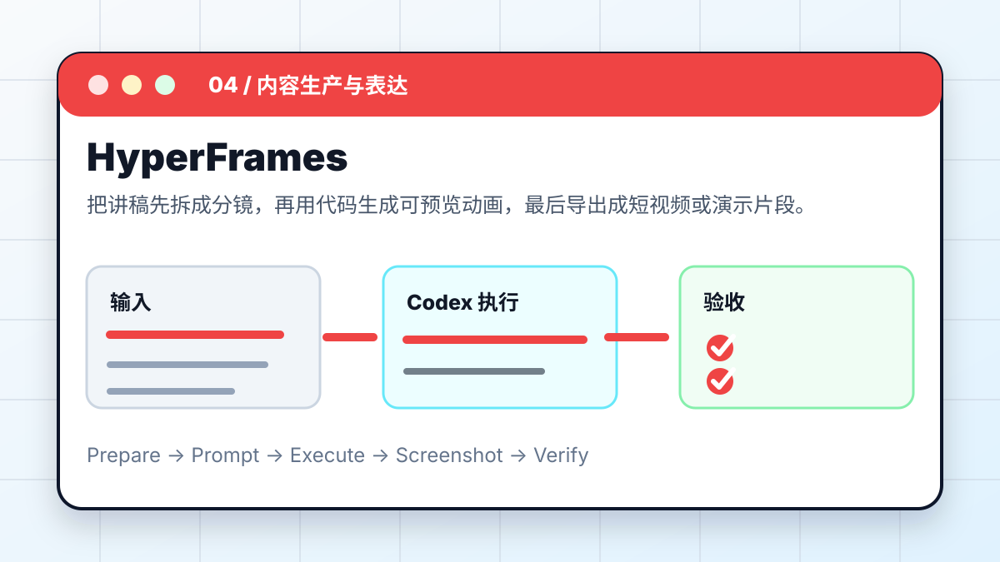
HyperFrames
把讲稿先拆成分镜，再用代码生成可预览动画，最后导出成短视频或演示片段。
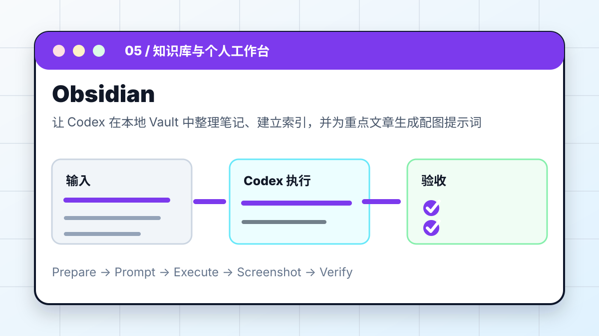
Obsidian
让 Codex 在本地 Vault 中整理笔记、建立索引，并为重点文章生成配图提示词或图片文件。
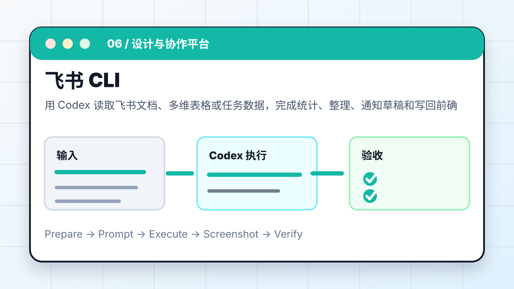
飞书 CLI
用 Codex 读取飞书文档、多维表格或任务数据，完成统计、整理、通知草稿和写回前确认。
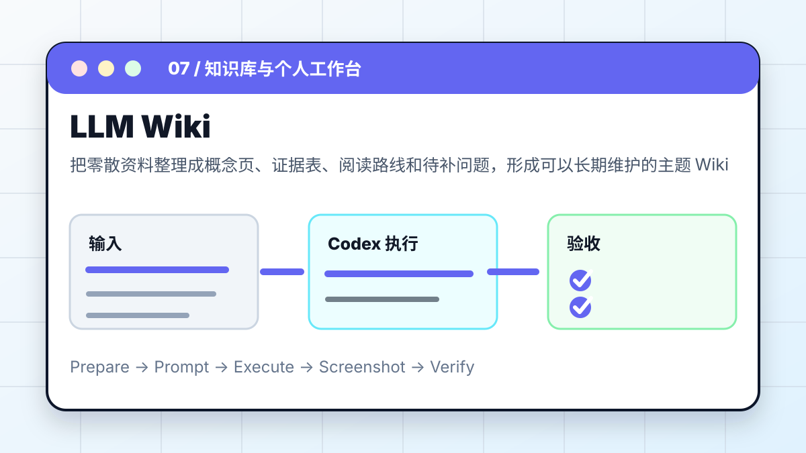
LLM Wiki
把零散资料整理成概念页、证据表、阅读路线和待补问题，形成可以长期维护的主题 Wiki。
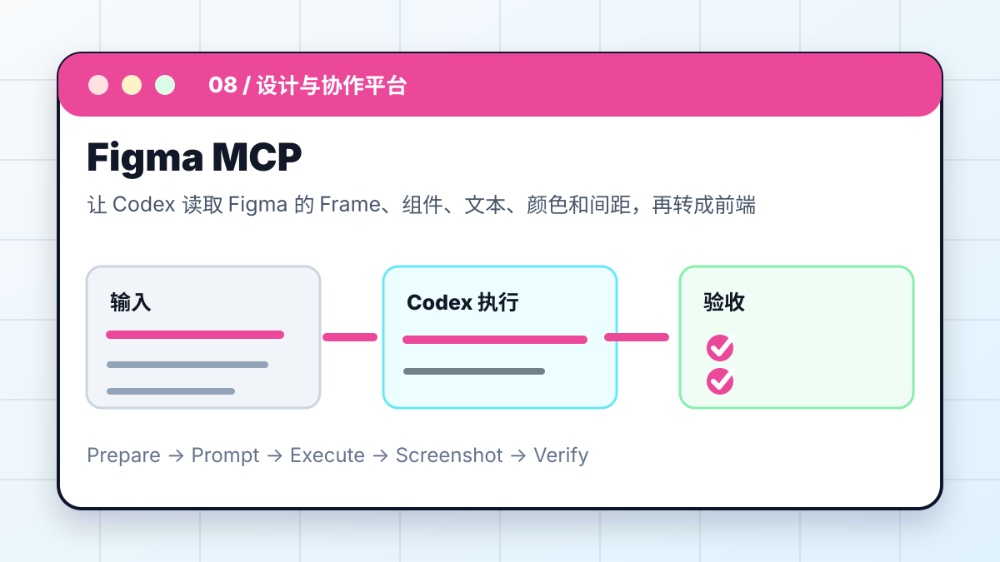
Figma MCP
让 Codex 读取 Figma 的 Frame、组件、文本、颜色和间距，再转成前端实现计划和验收截图。
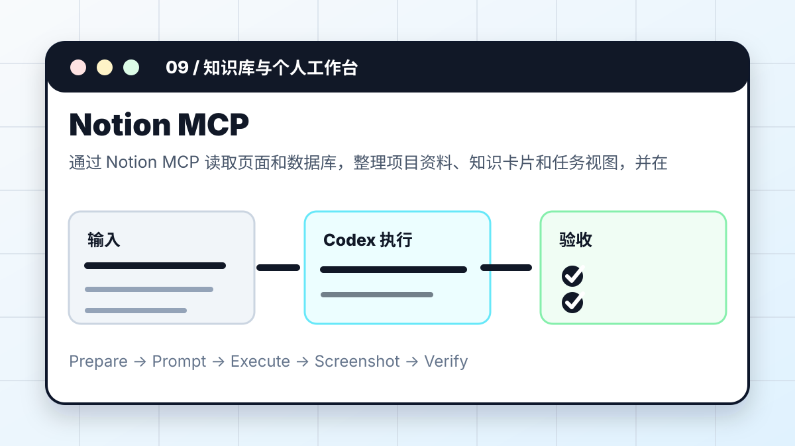
Notion MCP
通过 Notion MCP 读取页面和数据库，整理项目资料、知识卡片和任务视图，并在写入前列出变更。
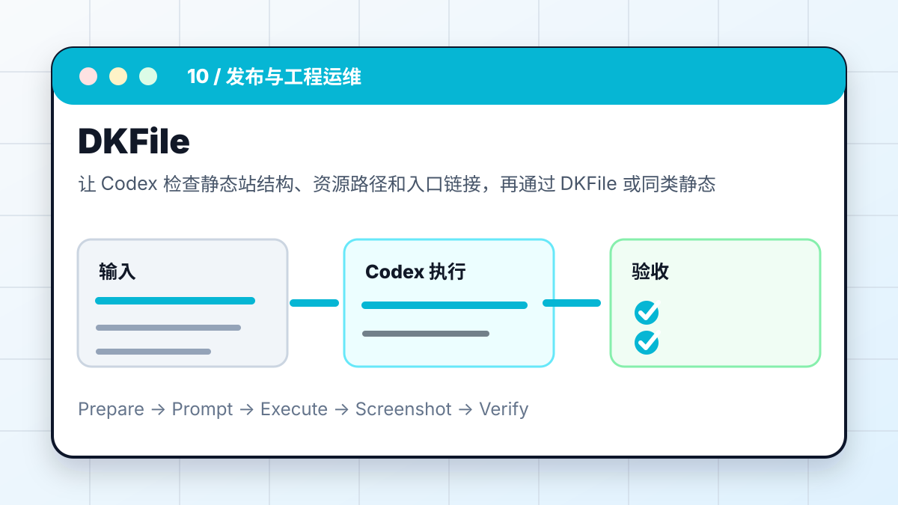
DKFile
让 Codex 检查静态站结构、资源路径和入口链接，再通过 DKFile 或同类静态托管发布到公网。

云服务器修 Bug
让 Codex 通过只读检查、日志分析、最小复现和可回滚补丁定位远程服务问题。
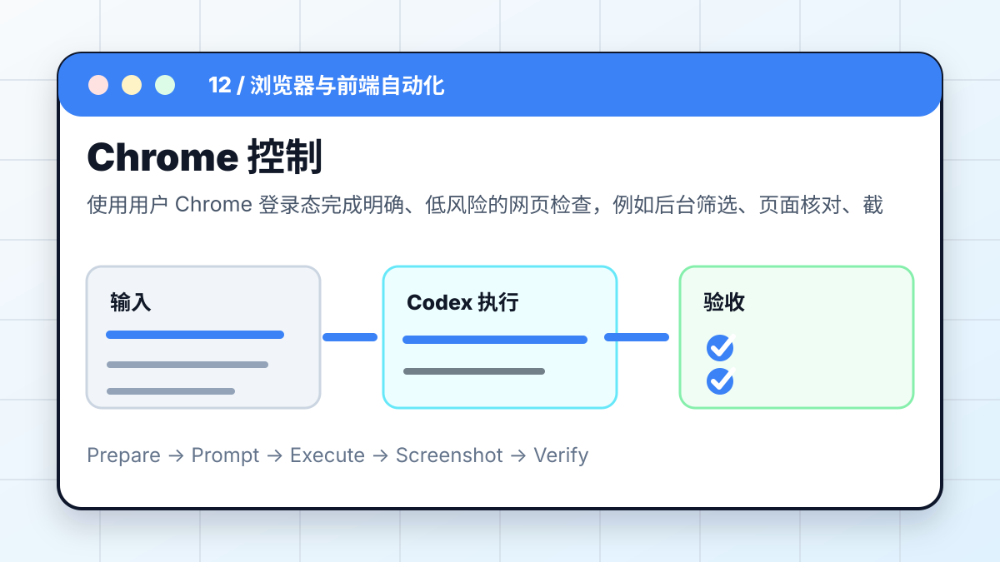
Chrome 控制
使用用户 Chrome 登录态完成明确、低风险的网页检查，例如后台筛选、页面核对、截图留证。
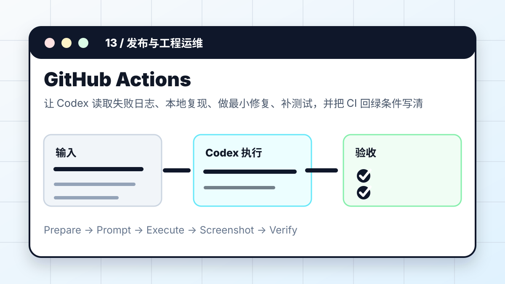
GitHub Actions
让 Codex 读取失败日志、本地复现、做最小修复、补测试，并把 CI 回绿条件写清楚。
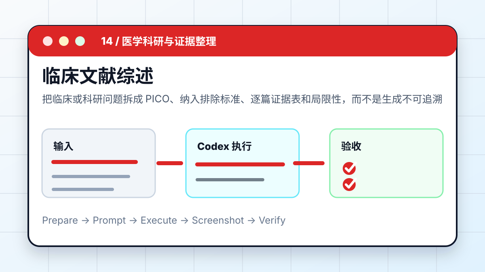
临床文献综述
把临床或科研问题拆成 PICO、纳入排除标准、逐篇证据表和局限性，而不是生成不可追溯的泛泛综述。
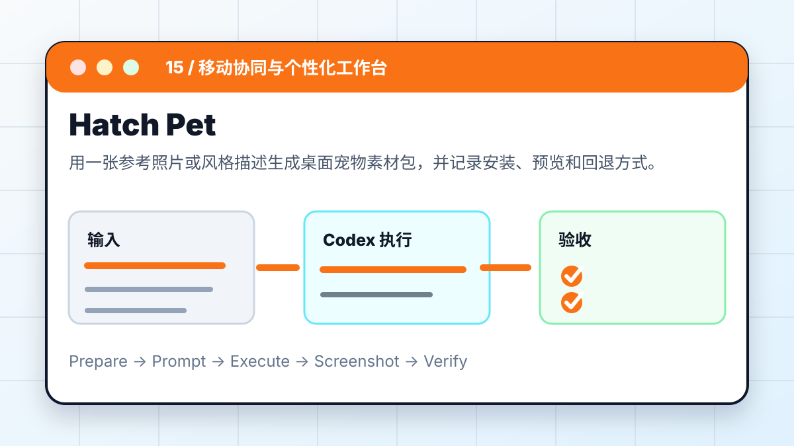
Hatch Pet
用一张参考照片或风格描述生成桌面宠物素材包，并记录安装、预览和回退方式。
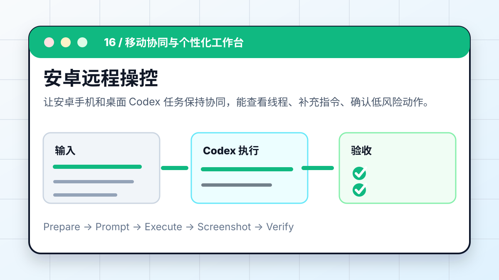
安卓远程操控
让安卓手机和桌面 Codex 任务保持协同，能查看线程、补充指令、确认低风险动作。
推荐入口与验证重点
| 编号 | 案例 | 核心场景 | 推荐入口 | 验证重点 |
|---|---|---|---|---|
| 01 | Codex × PPT Skill：一句话生成演示文稿 | 把一段文章、课程主题或会议纪要交给 Codex，让它先拆页级大纲，再生成可编辑 PPTX，并做版式检查。 | 桌面 App / CLI / PPTX Skill | PPTX 能打开且每页元素可编辑。 |
| 02 | Codex × Draw.io MCP：AI 自动绘制架构图 | 把系统说明、业务链路或接口调用关系转成可编辑架构图，而不是只生成一张不可修改的图片。 | App / MCP / diagrams.net | .drawio 文件能被 diagrams.net 打开。 |
| 03 | Codex × Playwright MCP：让 AI 操控浏览器 | 让 Codex 真正打开页面、点击入口、保存截图，并基于页面状态而不是想象来判断结果。 | App / MCP / Browser | 截图文件存在且能看到目标页面。 |
| 04 | Codex × HyperFrames：用代码生成动画视频 | 把讲稿先拆成分镜，再用代码生成可预览动画，最后导出成短视频或演示片段。 | App / CLI / 动画工程 | 视频能播放，时长和画幅符合要求。 |
| 05 | Codex × Obsidian：在知识库中自动生成配图 | 让 Codex 在本地 Vault 中整理笔记、建立索引，并为重点文章生成配图提示词或图片文件。 | CLI / Obsidian / Markdown | 原文和附件没有丢失。 |
| 06 | Codex × 飞书 CLI：一句话处理飞书数据 | 用 Codex 读取飞书文档、多维表格或任务数据，完成统计、整理、通知草稿和写回前确认。 | CLI / Feishu / Base | 字段没有误删或误改。 |
| 07 | Codex × LLM Wiki：在 Obsidian 中搭建 AI 知识库 | 把零散资料整理成概念页、证据表、阅读路线和待补问题，形成可以长期维护的主题 Wiki。 | Obsidian / CLI / Markdown | 目录层级清楚，新增资料有放置规则。 |
| 08 | Codex × Figma MCP：读懂设计稿 | 让 Codex 读取 Figma 的 Frame、组件、文本、颜色和间距，再转成前端实现计划和验收截图。 | MCP / IDE / 前端项目 | 关键文本、布局和组件层级正确。 |
| 09 | Codex × Notion MCP：打通知识空间 | 通过 Notion MCP 读取页面和数据库，整理项目资料、知识卡片和任务视图，并在写入前列出变更。 | MCP / Notion | 字段没有被误删。 |
| 10 | Codex × DKFile：网页一键发布到公网 | 让 Codex 检查静态站结构、资源路径和入口链接，再通过 DKFile 或同类静态托管发布到公网。 | CLI / 静态托管 / GitHub Pages | 公网 URL 返回 200。 |
| 11 | Codex × 云服务器：远程定位并修复 Bug | 让 Codex 通过只读检查、日志分析、最小复现和可回滚补丁定位远程服务问题。 | CLI / SSH / Remote | 错误可复现，修复后消失。 |
| 12 | Codex × Chrome：让 AI 直接控制浏览器 | 使用用户 Chrome 登录态完成明确、低风险的网页检查，例如后台筛选、页面核对、截图留证。 | Chrome / 登录态 / 浏览器插件 | 截图显示正确页面。 |
| 13 | Codex × GitHub Actions：CI 失败自动修复 | 让 Codex 读取失败日志、本地复现、做最小修复、补测试，并把 CI 回绿条件写清楚。 | GitHub Actions / PR / CLI | 本地能复现失败。 |
| 14 | Codex × 临床文献综述：把医学问题整理成证据表 | 把临床或科研问题拆成 PICO、纳入排除标准、逐篇证据表和局限性，而不是生成不可追溯的泛泛综述。 | App / CLI / PDF / DOI | 每条结论有来源。 |
| 15 | Codex × Hatch Pet：用一张照片生成专属宠物 | 用一张参考照片或风格描述生成桌面宠物素材包，并记录安装、预览和回退方式。 | 桌面 App / Hatch Pet / Skill | 宠物名称、素材包路径、安装路径明确。 |
| 16 | Codex × 安卓手机：扫码连接，远程操控 | 让安卓手机和桌面 Codex 任务保持协同，能查看线程、补充指令、确认低风险动作。 | ChatGPT App / Desktop App / 同一账号 | 手机能看到目标任务或明确失败原因。 |
案例成熟度
已形成完整流程
PPT、Playwright、Obsidian、飞书、文献综述、Hatch Pet、安卓远程、远程修 Bug、GitHub Actions。
偏工具接入教程
Draw.io、Figma、Notion、DKFile、Chrome 控制。重点在授权、典型任务和安全边界。
扩展补充
README、数据可视化、数据库、GitHub、采集、公众号、真实仓库、巡检、调研。